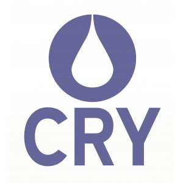

Expériences professionnels
Administrateur web – Beaute.Fashion
Projet et challenge personnel realise en autonomie
Septembre 2017 - Aujourd'hui
- Administration technique du site
- Direction de la publication
- Gestion et conduite des operations sponsorisees
Chargé de projet marketing digital – SoLocal, Boulogne-Billancourt (92)
Septembre 2016 – Aout 2018
- Participation aux lancements et pilotages produits
- Etude de marché et benchmarking
- Constitution démarches commerciales
Président – Association Wise Students
Association à but non lucratif, promouvant la culture générale chez les étudiants
Octobre 2015 – Novebre 2016
- Gestion d’une équipe de huit personnes
- Création et organisation de l'evenement Quiz’EM
- Formalités administratives et légales
- Prospection et communication
Assistant Department Manager – CRY Charity Shop, Portsmouth (England)
2 months of volunteership in Southsea, Portsmouth

Juin-Août 2016
- Store management
- Customer relationship management
- Financial and commercial studies
Formations Scolaires
Formation continue - Ecole 42, Paris (75)
Novembre 2018 - Actuellement
Formation continue a l'Ecole 42. Preparation a la maitrise des technologies numeriques. Participation a des conferences et rencontres sur des sujets digitaux et numeriques d'actualite.
Grade de master - Ecole de Management de Normandie, Caen (14) et Paris (75)
Septembre 2013 - Juin 2018
Programme Grande Ecole. Expatriation d'un semestre a Taiwan pour suivre le Bachelor of International Business and Administration (BIBA) a Feng Chia University.
Memoire de fin d'etudes traitant de l'achat d'espaces publicitaire sur internet et de la technologie blockchain.
Baccalauréat - Lycée Augustin Thierry, Blois (41)
Septembre 2010 - Juin 2013
Baccalauréat Economique et Sociale obtenu en section européenne anglais avec la mention Bien